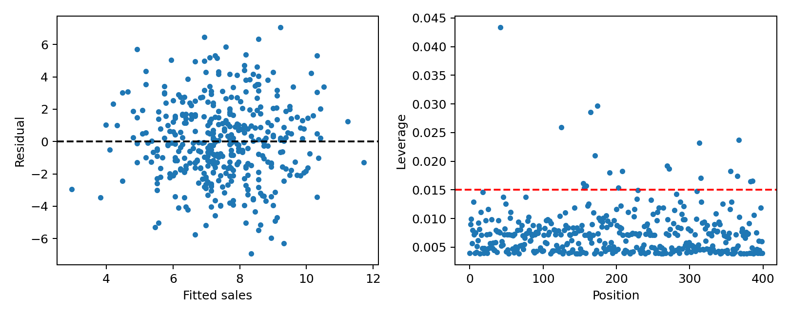

代码 3.7-08 · 第 10 题：残差与杠杆的可视化
按完整 Notebook 的顺序运行；本块可能依赖前面的变量。3.6—3.7包含教材真实数据与模拟实验；全样本统计分析不等于独立测试评估。
逐步读代码
右图红线是2倍平均杠杆值，仅为经验筛查线；平均值为参数数目除以样本数。左图检查残差模式，右图检查特殊输入，回答的问题不同。
实际运行输出
No text output. See the figure or explanation below.

按完整 Notebook 的顺序运行；本块可能依赖前面的变量。3.6—3.7包含教材真实数据与模拟实验；全样本统计分析不等于独立测试评估。
右图红线是2倍平均杠杆值，仅为经验筛查线；平均值为参数数目除以样本数。左图检查残差模式，右图检查特殊输入，回答的问题不同。
No text output. See the figure or explanation below.
